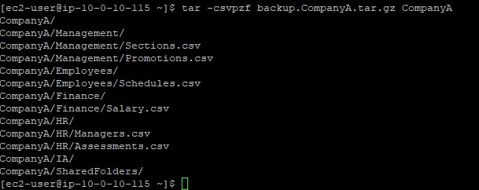
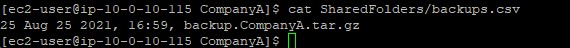
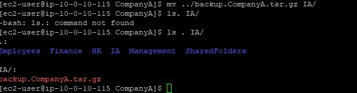

Backup
Used tar -csvpzf to create a compressed archive of the entire
CompanyA folder structure.
Create a compressed backup of a folder structure using tar, log the backup with a timestamp, and transfer the backup file to another directory.
Connected via PuTTY (as described in Lab 225). Created a compressed backup of the CompanyA folder using tar, logged the backup date and file name to a backups.csv file using echo and tee, and transferred the archive to the IA folder.
Used tar -csvpzf to create a compressed archive of the entire
CompanyA folder structure.
Recorded the backup date, time, and file name in
SharedFolders/backups.csv using echo and
tee.
Moved the backup file to the IA folder with mv,
simulating a file transfer to another team.
Detailed record of each task performed during the lab.
pwd:
/home/ec2-user.
ls -R CompanyA,
which showed six subdirectories (Employees, Finance, HR, IA, Management,
SharedFolders) with their respective files.tar -csvpzf backup.CompanyA.tar.gz CompanyA.
ls:
backup.CompanyA.tar.gz appeared alongside CompanyA.
-c creates an archive, -s preserves
file order, -v shows verbose output, -p preserves
permissions, -z compresses with gzip, and -f
specifies the output file name.
cd /home/ec2-user/CompanyA.
touch SharedFolders/backups.csv.
echo "25 Aug 25 2021, 16:59, backup.CompanyA.tar.gz" | sudo tee SharedFolders/backups.csv.
cat SharedFolders/backups.csv.

tee command writes output to both the terminal and a file
simultaneously. The | (pipe) redirects the output of
echo into tee.
pwd:
/home/ec2-user/CompanyA.
mv ../backup.CompanyA.tar.gz IA/.
ls . IA: the backup file was now in the
IA directory and no longer in the parent folder.
Commands used in this lab for backups and file operations.
tarCreates or extracts compressed archive files.
-c : Create a new archive-v : Verbose output (list files being processed)-p : Preserve file permissions-z : Compress with gzip-f : Specify the archive file nameechoPrints text to the terminal or writes it to a file when combined with redirection.
teeReads from standard input and writes to both the terminal and a file simultaneously.
| (pipe)Redirects the output of one command as the input of another.
Example: echo "text" | tee file.csv
tar with gzip compression.echo and tee.|) operator to chain commands together.mv.
This lab demonstrated the backup workflow in Linux: archiving data with
tar, documenting the operation in a log file, and transferring
the backup to a designated location.
In a production environment, these steps would typically be automated with scripts and scheduled using cron jobs. The logging step is important for tracking when backups were made and avoiding unnecessary duplicates.